Games
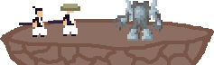
Games I’ve made, most of them with the Godot engine for game jams as part of a team. These are all hosted on my itch.io page, and most can be played right in the browser.
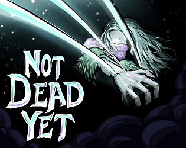
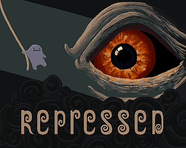
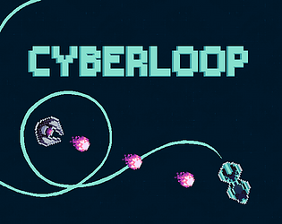
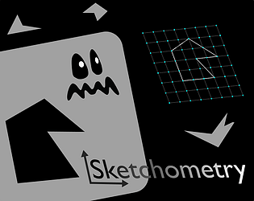
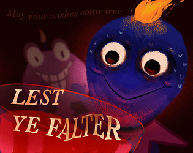
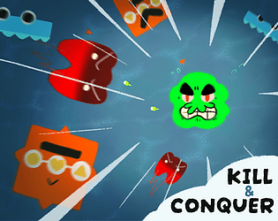
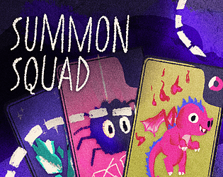
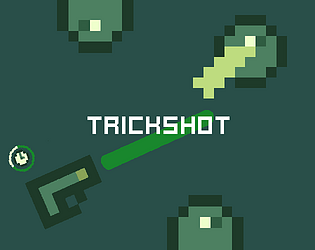
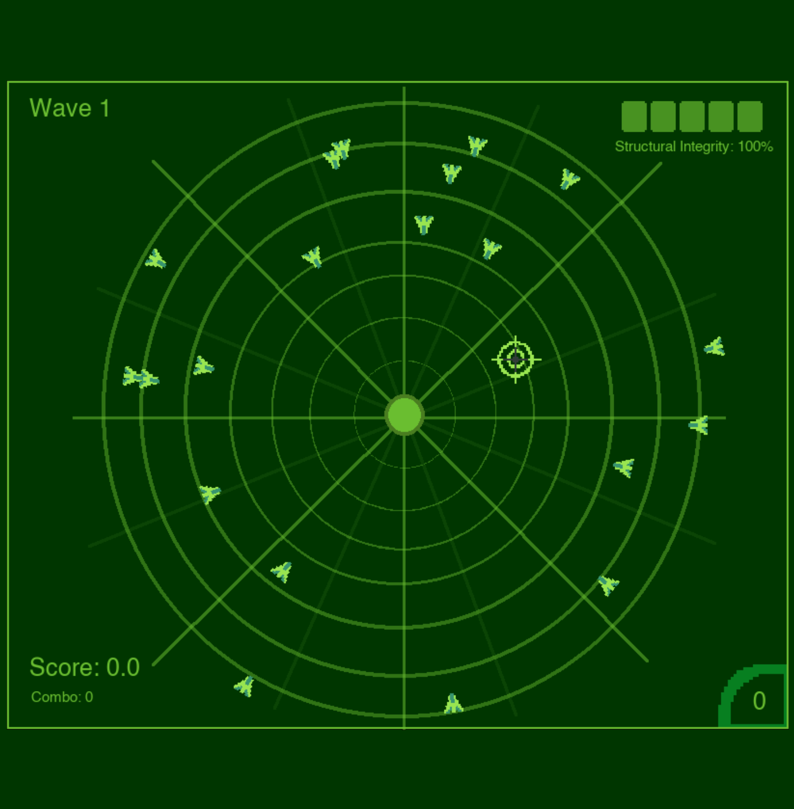
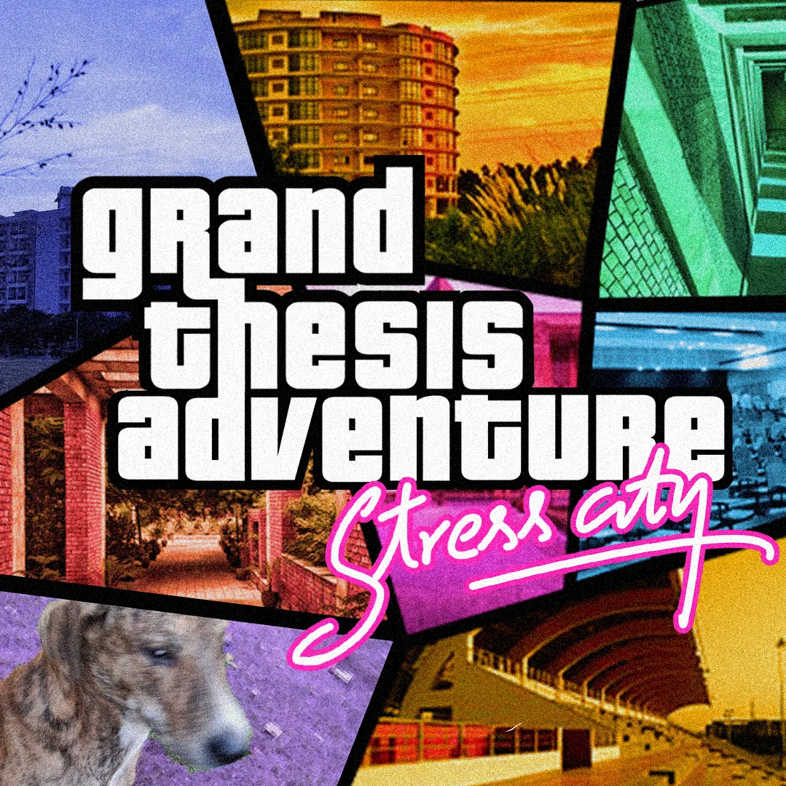
Your heart is stopping. The countdown has begun. Cling to life and fight to survive.
PlayYour trail's a weapon and every tight turn could be your last. Outsmart, outlive and outloop.
PlayYou sense defiance brewing among your followers. Their faith must be restored... NO MATTER THE COST.
PlayA cell in a petri dish, trying to grow and escape the lab.
DownloadExplore the crumbling ruins of forgotten treasures by solving puzzles with a little help from your summoned friends.
PlayIn this world, you are not the wielder but the weapon itself! Are you worthy of making the trickiest shots of them all?
PlayA retro arcade-style game made using AlphaZero.jl where players must defend their base from incoming threats.
SourceA treasure hunt event built using the Tetra game engine.
Play in browserOrigami
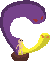
Modular origami (golden venture folding), where many small folded paper units are slotted together to form three-dimensional shapes.


Pixel Art
To make these, I use Aseprite which used to be FOSS till 2016, but is currently a paid (but source-available) software. It can be built locally from the source, by following these instructions, but it is certainly worth purchasing as well.


3D Models
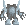
Exploring the third dimension with Blender.